CSC 53439 EP
Lecture 2
Exploration and Distributional Methods in RL
Jérémie Decock
October 2, 2026
Hello everyone, and welcome to this second lecture.
Today, we are going to look at some advanced topics in reinforcement learning.
Methods that go beyond the standard algorithms you already know.
Outline
Exploration and Uncertainty Distributional RL
So, here is the plan for today.
Two parts.
First, exploration .
How can an agent find good actions, when rewards are very hard to find?
Second, distributional RL .
What if we learn the whole distribution of returns, instead of just its mean?
My goal is to give you an overview .
I won't go into every technical detail.
For each method, I'll focus on two things.
The motivation : what problem does it solve?
And the core idea : how does it solve it?
Part 1
Exploration and Uncertainty
So, let's start with exploration .
It's one of the oldest problems in RL.
And it's still one of the hardest .
Exploration-Exploitation Dilemma
A real-life example of the exploration vs exploitation dilemma: where to eat?lecture
11 .)
Agent must explore to discover rewarding actions and states.
Agent must exploit known information to maximize reward.
Balancing exploration and exploitation is critical for efficient learning.
Too much exploration: slow progress; too much exploitation: suboptimal policies.
Let's start with a picture.
Here is our robot, and it's hungry.
On the left, "The Usual Place": a restaurant it knows well, and it's pretty happy with it.
On the right, a new restaurant just opened.
So, what should it do?
If it goes to the usual place, it gets a good meal for sure.
That's exploitation : use what you already know to get the best reward.
If it tries the new place, maybe it's disappointing... or maybe it's a new favorite.
That's exploration : take some risk to gather information.
Well, an RL agent has exactly the same problem.
It must explore to discover rewarding actions and states .
And it must exploit what it knows to maximize its reward .
The hard part is to find the right balance .
Too much exploration, and learning is slow : we keep trying bad options.
Too much exploitation, and we get stuck with a suboptimal policy : we never find the better restaurant.
The best long-term strategy often means accepting some short-term sacrifices .
Unstructured Exploration
$\varepsilon$-greedy
Deep Q-Learning Algorithm
FOR EACH episodeDO UNTIL $\mathbf{s}$ is finalRETURN $\mathbf{\omega_1}$
At each step:
with probability ε , select a random action;
with probability 1-ε , select the action with the highest estimated value.
👉 Simple to implement, widely used in discrete action spaces.
Typically, ε is annealed (decreased) over time to shift from exploration to exploitation.
So, how do we explore in practice?
The simplest family of methods is called unstructured exploration .
"Unstructured" means we just inject some randomness into the agent's choices.
The best-known example is ε-greedy .
You already know it: it's the line in red, in the DQN algorithm.
At each step, with probability ε, we pick a random action .
Otherwise, we pick the greedy action : the one with the highest estimated Q-value.
It's very simple, and it's the default choice in discrete action spaces .
[click]
In practice, ε is not constant.
We start with a large ε, so the agent explores a lot.
Then we decrease ε over time , down to a small minimum value.
So the agent shifts smoothly from exploration to exploitation.
How fast should ε decrease?
Well, that's a hyperparameter , and it's usually tuned by trial and error.
The weakness of ε-greedy: this randomness is blind .
The agent doesn't try to go where it knows the least.
Unstructured Exploration
Gaussian Noise
Add zero-mean Gaussian noise to the action output by the policy.
Common in algorithms for continuous control (e.g., DDPG, TD3).
Noise variance can be annealed to reduce exploration over time.
Encourages local exploration around the current policy's actions.
$$\mu'(s_t) = \mu(s_t | \theta^{\mu}_t) + \mathcal{N}$$
where $\mu(s_t | \theta^{\mu}_t)$ is the actor network with weights $\theta^{\mu}_t$
Now, what about continuous actions ?
Here, ε-greedy is not the natural choice.
Instead, we take the action of the policy, and we add some noise to it.
Look at the formula.
μ is the actor network: it outputs a deterministic action .
And we add a noise term, N, on top of it.
Typically, a zero-mean Gaussian noise .
That's what DDPG and TD3 do.
And like with ε, we can reduce the noise over time.
A small detail.
Independent Gaussian noise makes the actions jitter from one step to the next.
So the original DDPG paper used an Ornstein-Uhlenbeck process.
It's a noise that is correlated in time, better for physical systems with inertia.
Later, TD3 showed that simple Gaussian noise works just as well in practice.
The limit?
This exploration is local : the agent only tries actions close to what it already does.
So it won't discover far-away or rare states .
Limits of Unstructured Exploration
Case Study: Montezuma's Revenge (Atari)
Unstructured methods (ε-greedy, Gaussian noise) struggle in environments with sparse
rewards and complex exploration requirements.
Montezuma's Revenge (Atari): classic benchmark for hard exploration.
Random actions rarely reach rewarding states; agent fails to learn meaningful behavior.
Motivates the need for intrinsic motivation and structured exploration techniques.
OK, so do these simple methods work?
Well, on easy problems, yes.
But here is a famous counter-example: Montezuma's Revenge , an Atari game.
[play the video]
To get the first reward, the player must grab the key .
So: go down the ladders, jump over the rolling skull, and climb up to the key.
And to get the next reward, go all the way back and open a door.
That's a long and very precise sequence of actions.
One bad jump, and you lose a life.
Now imagine an agent that just presses random buttons .
It will almost never reach the key.
So it almost never sees a reward: the rewards are sparse .
And with no reward, there is nothing to learn.
In fact, the original DQN scored zero points on this game.
So we need smarter ways to explore.
That's the motivation for the rest of this part: intrinsic motivation , and structured exploration .
Maximum Entropy RL
Exploration and Robustness via Entropy
Augments the reward with an entropy term to encourage diverse actions:
$$ J(\pi) = \mathbb{E}_{\pi} \left[ \sum_t \Big( r_t + \alpha \mathcal{H}(\pi(\cdot|s_t)) \Big) \right] $$
where $\mathcal{H}$ is the entropy and $\alpha$ controls the exploration-exploitation tradeoff.
Promotes stochastic policies, improving robustness and exploration.
Widely used in robotics and continuous action domains.
Another family of methods: maximum entropy RL .
Jesse already presented it in the first part of the course, so I'll be quick.
Here, the idea is to change the objective itself.
Look at the formula.
At each step, the agent gets the usual reward, r.
Plus a bonus: the entropy of its policy in the current state, weighted by α.
What does it mean?
Entropy measures how random the policy is.
So the agent is rewarded for keeping its options open.
For not committing too early to a single action.
And α sets the balance : a large α means more exploration, and with α equal to zero, we're back to standard RL.
Two benefits.
First, better exploration , since the policy stays stochastic.
Second, more robust policies: the agent learns several ways to solve the task, not just one.
That's why it's widely used in robotics and continuous control.
Maximum Entropy RL
Exploration and Robustness via Entropy
Key algorithms :
Two key algorithms here, both by Haarnoja and colleagues.
First, Soft Q-Learning , in 2017.
It puts the entropy term inside the Q-learning update .
That's why it's called "soft".
The hard max over actions of Q-learning becomes a soft maximum : a log-sum-exp.
Then, Soft Actor-Critic , or SAC, in 2018.
It's an off-policy actor-critic , with this entropy bonus.
Off-policy means it can reuse past experience from a replay buffer.
So it's quite sample-efficient .
SAC quickly became a standard baseline for continuous control.
If you need a solid algorithm for a robot arm, SAC is often the first thing to try.
Parameter Noise-based Exploration
Noisy Nets, Parameter Space Noise
Next idea: instead of adding noise to the actions, we add noise to the network's weights .
Two papers proposed this, at the same time.
Why is it different?
With action noise, every step is perturbed independently.
So the agent keeps changing its mind, at every single step.
With parameter noise, we perturb the policy itself .
As long as the perturbation is fixed, the behavior is consistent : same state, same action.
It's like trying a slightly different strategy, rather than pressing random buttons.
In Noisy Nets , the linear layers of the network get noisy weights.
And the network learns the amount of noise , by gradient descent.
So there is no ε to tune anymore: the agent decides by itself how much to explore.
By the way, Noisy Nets is one of the components of Rainbow .
Parameter space noise , by Plappert and colleagues, applies the same idea to DQN, DDPG and TRPO.
Here, the noise is sampled at the start of an episode, and kept fixed during the episode.
And its scale is adapted automatically, to keep a target level of change in the actions.
Intrinsic Reward-based Exploration
Augment environment reward $r_t$ with an intrinsic reward
👉 Encourages agent to explore novel or uncertain states.
Two main approaches:
Count-based exploration : bonus for visiting rarely seen states.
Prediction-based exploration : bonus for high prediction error (surprise).
Let's come back to our Montezuma problem: sparse rewards .
If the environment almost never gives a reward... well, let's create our own !
The idea: we add an intrinsic reward to the reward of the environment.
The environment reward is called extrinsic : it defines the task.
The intrinsic reward is an exploration bonus : it's high when the agent sees something new.
And β is a weight, to balance exploitation and exploration.
This comes from psychology: intrinsic motivation , or curiosity .
Think of a child: nobody pays them to explore, exploring is rewarding in itself.
So now, the question is: how do we measure "new"?
There are two main approaches.
Count-based exploration: a bonus for states we have rarely visited.
Prediction-based exploration: a bonus when the agent is surprised , when it fails to predict what happens.
Let's see both.
Intrinsic Reward-based Exploration
Count-based Exploration
Assigns an exploration bonus that decreases with the state visit count $N(s_t)$:
$$r^i_t = \frac{1}{\sqrt{N(s_t)}}$$
Advantage : Effective in small, discrete state spaces.
Limitation : Infeasible in high-dimensional or continuous spaces
Alternatives: approximate state visitation counts:
Bellemare et al., 2016 – CTS-based pseudocounts
Ostrovski et al., 2017 – PixelCNN-based pseudocounts
Tang et al., 2017 – Hash-based counts
The first approach is the most intuitive one: we count .
N of s is the number of times we have visited state s.
And the bonus is one over the square root of this count.
So a new state gives a big bonus , and the more we visit it, the smaller the bonus.
This pushes the agent toward rarely visited states .
In a small, discrete world, like a grid world, this works very well.
But what about Atari, where the state is an image ?
Well, you almost never see the exact same image twice .
So almost all the counts are zero, or one.
And the bonus doesn't tell us anything useful.
Same problem with continuous states.
So the solution is to approximate the counts: we call them pseudo-counts .
Bellemare and colleagues use a density model of the images, to estimate how familiar a state is.
Ostrovski and colleagues improve it with a neural density model, PixelCNN.
And Tang and colleagues use a simpler trick: they hash each state into a short code, and count the codes.
So similar states share the same count.
Intrinsic Reward-based Exploration
Prediction-based Exploration
Uses prediction error as intrinsic reward:
$$r^i_t = \| f(s_t, a_t) - s_{t+1} \|$$
where $f$ is a learned forward dynamics model.
Properties:
Agent is rewarded for visiting states where its model is uncertain or inaccurate (novelty/surprise).
Common in high-dimensional or continuous environments.
Limitations:
Model can be "fooled" by stochasticity or noise.
May focus on unpredictable but irrelevant states.
Motivates use of random networks (e.g., RND) for more robust novelty estimation.
The second approach: we reward the agent when it is surprised .
For that, the agent learns a forward model , f.
It takes the current state and the action, and it tries to predict the next state .
The intrinsic reward is the prediction error : the gap between the prediction and what really happened.
Why does it work?
If the model predicts well, the agent already knows this part of the world: no bonus.
If the error is large, it's an unknown region : big bonus, so let's go there!
And as the model learns, the bonus decreases: same effect as with counts, but without counting.
That's why it scales to images and continuous states.
In practice, like in ICM, we usually predict features of the next state, rather than raw pixels.
But there is a catch.
The model can be fooled by randomness .
If something in the environment is just unpredictable, the error stays high forever.
So the agent may focus on things that are unpredictable, but completely irrelevant .
Let me show you the classic example.
Intrinsic Reward-based Exploration
Limits of Prediction-based Intrinsic Motivation
In stochastic environments, dynamics are unpredictable (e.g., random noise, a "noisy TV" showing random images).
Prediction error remains high even for familiar states.
Agent is attracted to noisy or unpredictable regions, leading to biased and inefficient exploration.
This is called the noisy TV problem .
Imagine there is a TV in the maze, and it shows random images .
The agent tries to predict the next image on the screen.
But it's pure noise: it can never predict it.
Even after watching it for hours.
So the prediction error stays high, and the bonus stays high.
Result: the agent is hooked.
It stays in front of the TV forever, like a couch potato .
And it stops exploring the rest of the world.
So, the problem is this.
The prediction error mixes up two very different things.
Something new , that we can learn about.
And something just random , that we will never be able to predict.
In technical terms, the first one is epistemic uncertainty: what we don't know yet.
The second one is aleatoric uncertainty: the pure randomness of the environment.
For exploration, we want a bonus for the first one only.
Intrinsic Reward-based Exploration
Motivation for RND
A measure of novelty that is more stable and less sensitive to randomness .
Target network = a fixed random function \( f_{\text{target}}(s) \).
Since it is frozen, it defines a stable representation of states.
Each state has a deterministic, time-invariant signature.
Predictor network = a network trained to approximate \( f_{\text{target}}(s) \).
The prediction error is high at first for all states.
As some states are revisited, the predictor learns to approximate them → error decreases.
Truly novel states remain hard → high error → strong intrinsic reward.
👉 Unlike dynamics prediction, this error does not depend on the environment’s stochasticity , but only on whether the state has already been “learned” by the predictor.
So here comes Random Network Distillation , or RND.
It keeps the idea of a prediction error.
But it changes what we predict .
We take a first network, initialized at random, and we freeze it.
That's the target network .
It never learns anything: it's just a fixed, random function of the state.
So each state gets a kind of random signature , and this signature never changes.
Then, a second network, the predictor , is trained to reproduce this signature.
At the beginning, the predictor is bad everywhere: the error is high for all states.
On the states we visit often, it gets good: the error goes down.
But on new states , it has never been trained: the error stays high.
So this error is a measure of novelty .
And here is the key point.
The target only depends on the current state, not on what happens next.
It's a deterministic function of the state.
So the randomness of the transitions can't fool it anymore.
Intrinsic Reward-based Exploration
Focus on RND
RND uses two neural networks:
Target network : randomly initialized, fixed parameters.
Predictor network : trained to predict the target network's output for each state.
Intrinsic reward : prediction error (difference between predictor and target outputs).
States that are novel (rarely visited) yield high prediction error and thus high intrinsic reward.
As the agent visits a state more often, the predictor learns to match the target, reducing the intrinsic reward.
Encourages exploration of unfamiliar states.
Burda et al. (2018). Exploration by random network distillation.
So, let me summarize how RND works.
Two networks, and both take the state as input.
The target : random weights, frozen.
The predictor : trained to match the target's output, on the states we visit.
The intrinsic reward is the gap between the two outputs.
New state: big gap, big reward.
Familiar state: small gap, small reward.
Why is it nice?
First, it's simple : two standard networks, and no model of the environment's dynamics.
Second, it's stable : the target never moves, so the definition of novelty doesn't drift.
Third, it's much less fooled by randomness , as we just saw.
And it works!
RND was the first method to beat the average human score on Montezuma's Revenge.
Without any human demonstration.
Let's see it in action.
[play the video]
So this is the RND agent , playing Montezuma's Revenge.
This video comes from OpenAI, where RND was developed.
Look: it collects the keys ...
it collects gems...
it goes through the laser gates ...
and at some point, it even finishes the first level .
Remember: the original DQN scored zero on this game.
Here, the game rewards are still there, but they are very rare.
What keeps the agent moving into new rooms is the intrinsic reward: its curiosity .
Intrinsic Reward-based Exploration
Other Key Publications
Here are the key papers on this topic, if you want to go further.
I won't go through all of them, just a few words on each.
VIME : the bonus is the information gain about the environment's dynamics, with a Bayesian neural network.
Then the three pseudo-count papers: these are the count-based methods we've just seen.
EX2 : a classifier tries to tell a state apart from the states already visited.
If that's easy, the state is new.
ICM , the Intrinsic Curiosity Module: prediction-based, in a learned feature space.
Then a large-scale study by Burda and colleagues.
They trained agents with curiosity alone, no game reward at all, on 54 environments.
And surprisingly, it works quite well on many games.
And finally, RND , that we've just discussed.
Further Reading
Exploration Strategies in Deep Reinforcement Learning , Lilian Weng, 2020.
👉 A comprehensive blog post covering a wide range of exploration techniques, theoretical motivations, and practical considerations in deep RL.
And if you want one single resource on exploration, read this blog post by Lilian Weng .
It's very clear, well illustrated, and it covers much more than what we saw today.
For instance, memory-based methods like Go-Explore , which reached superhuman scores on Montezuma's Revenge.
OK, that's it for exploration.
Part 2
Distributional RL
OK, let's move on to the second part: distributional RL .
Here, the question is different.
It's not about how we collect experience.
It's about what we learn from it.
So far, our value functions predict one number: the expected return .
Now, we'll try to learn the whole distribution of returns.
Categorical DQN (C51)
Introduction & Motivation
Classic DQN :
Learns only the expectation $Q(s,a)=\mathbb{E}\left[\sum_t \gamma^t r_t \mid s,a\right]$
Bellman: \(Q(s,a) = \mathbb{E}\left[R(s,a) + \gamma Q(S', A')\right]\).
Lost information: variance, skewness, tail (risk) structure.
Distributional RL :
Model full return random variable \(Z(s,a)\) (not just its mean).
Distributional Bellman: \(\mathcal{T}^\pi Z(s,a) \stackrel{D}{=} R(s,a) + \gamma Z(S', A')\).
Benefits: richer training signal, more stable gradients, enables risk-sensitive objectives.
Key idea : preserve probabilistic structure throughout the backup,
In this part, we focus on one algorithm: C51 , also called Categorical DQN.
Let's start from DQN.
DQN learns Q of s, a: the expected sum of discounted rewards.
And the Bellman equation links this expectation to the expectation at the next step.
But the return is a random variable .
The same state and action can lead to very different outcomes.
When we keep only the mean, we lose a lot: the variance , the skewness, the tails ... in other words, the risk.
Distributional RL keeps all of it.
We model the full random return: Z of s, a .
And the Bellman equation still holds, but now in distribution : that's the D above the equal sign.
The return here has the same distribution as the reward, plus gamma times the return at the next step.
Why bother?
A richer training signal , more stable learning, and risk-sensitive objectives become possible.
And the key idea, at the bottom: we keep the whole distribution during learning.
And we take its mean only at the very end, to choose the action .
DQN Recap
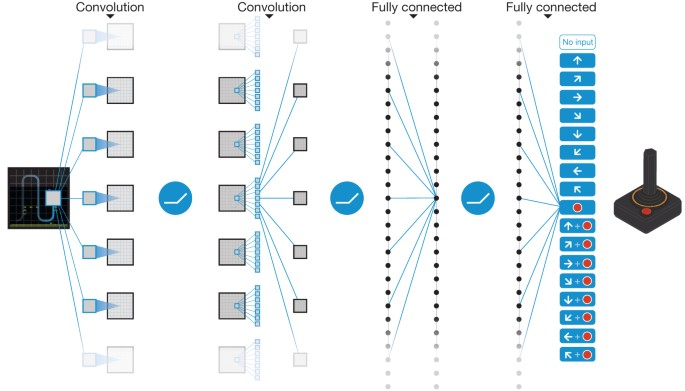
Source: Mnih et al. Human-level control through deep reinforcement learning. Nature 518, 529–533 (2015).
Goal : approximate \( Q^*(s,a) = \max_\pi \mathbb{E}_\pi\left[\sum_{t} \gamma^t r_t \mid s,a\right] \)Network : input is state, output is vector \( Q(s,a) \) for all actionsBellman backup (target) : \( y = r + \gamma \max_{a'} Q(s',a') \)Loss : mean squared error \( (y - Q(s,a))^2 \)Limitation : collapses the whole distribution of returns into a single scalar value (its mean)
A quick recap of DQN , since C51 is built on top of it.
The goal: approximate the optimal Q-function , Q star.
The network takes the state as input: here, the Atari screen.
A few convolutional layers, then fully connected layers.
And the output is a vector: one Q-value per action , one for each joystick move.
To train it, we build a target with the Bellman equation.
The reward, plus gamma times the best Q-value at the next state.
And we minimize the squared error between this target and our prediction.
So it's basically a regression on a single number.
And that's precisely the limitation.
Whatever happens after this action, all the possible futures are squeezed into one number : their mean.
Distributional RL
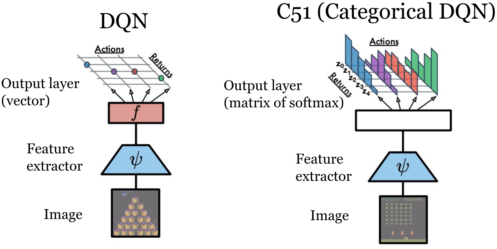
Source: Implicit Quantile Networks for
Distributional Reinforcement Learning , Dabney et al., 2018.
Random return : \( Z(s,a) \) is a random variable over \( \mathbb{R} \)Distributional Bellman : \( \mathcal{T}^\pi Z(s,a) \stackrel{D}{=} R(s,a) + \gamma Z(S', A') \), i.e., the law is transformedGoal : approximate the law of \( Z(s,a) \) (not just \( \mathbb{E}[Z] \))Expectation recoverable : \( Q(s,a) = \mathbb{E}[Z(s,a)] \)
C51 : A Distributional Perspective on
Reinforcement Learning , Bellemare et al., 2017.
Here is the picture to keep in mind.
On the left, DQN: for each action, the output is a single point , the expected return.
On the right, C51: for each action, the output is a whole histogram over the possible returns.
Same feature extractor: only the output layer changes.
So now, Z of s, a is a random variable, and we want to learn its law .
And we don't lose anything: the Q-value is simply the mean of Z .
On the theory side, Bellemare and colleagues proved a nice result.
For a fixed policy , the distributional Bellman operator is a contraction , in the Wasserstein metric.
So, like in classic RL, repeated updates converge to the true return distribution.
But be careful: that's only for policy evaluation.
For control , with the max, it's not a contraction anymore.
Only the mean is guaranteed to converge.
And C51 doesn't even minimize the Wasserstein distance: it uses a cross-entropy loss, as we'll see.
So the theory doesn't fully cover C51... but it works very well in practice.
Categorical Approximation (C51)
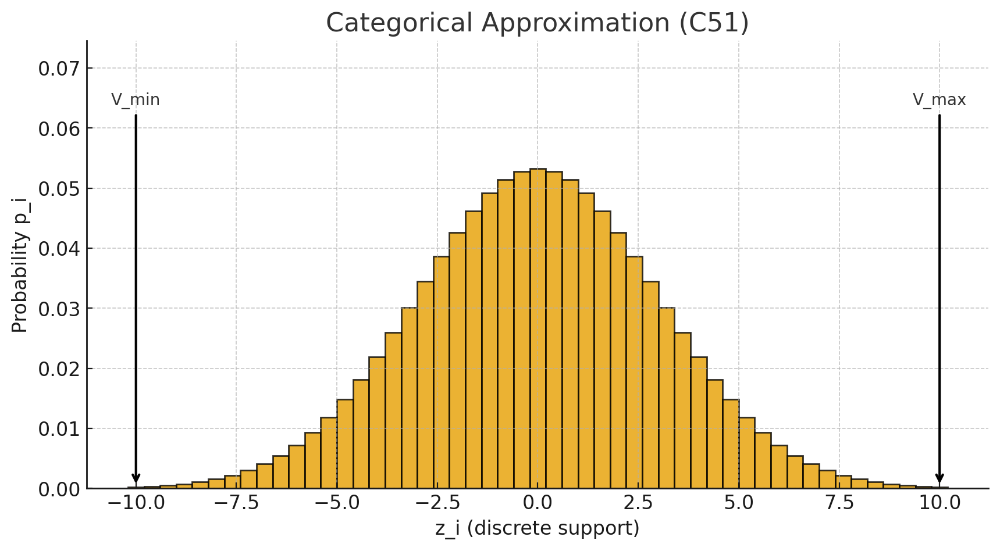
Fixed discrete support: \( \{z_i\}_{i=0}^{N-1} \), with \( N = 51 \)
Bounded interval: \( [V_{\min}, V_{\max}] \)
\( \Delta z = \frac{V_{\max} - V_{\min}}{N-1} \)
Network predicts logits \( \to \) softmax \( \to \) \( p_i(s,a) \)
Approximate distribution: \( \mathbb{P}(Z(s,a) = z_i) = p_i \)
Choix fixe du support simplifie projection mais introduit rigidité si queue hors bornes.
Now, how do we represent a distribution with a neural network?
C51 uses the simplest possible option: a histogram .
We fix a grid of possible return values, between V min and V max .
These values are called atoms : z i.
There are 51 of them, evenly spaced, so the gap between two atoms is delta z.
That's where the name comes from: C51 , categorical with 51 atoms.
On Atari, the paper uses V min equals minus 10, and V max equals plus 10.
The atoms are fixed : the network doesn't move them.
What it learns is the probability of each atom.
For each action, it outputs 51 numbers, and a softmax turns them into probabilities that sum to one.
The nice thing with a fixed grid: the loss becomes a simple cross-entropy , like in classification.
The price: the bounds are a hyperparameter , and any return outside them is just clipped.
Distributional RL
Example of learned distribution
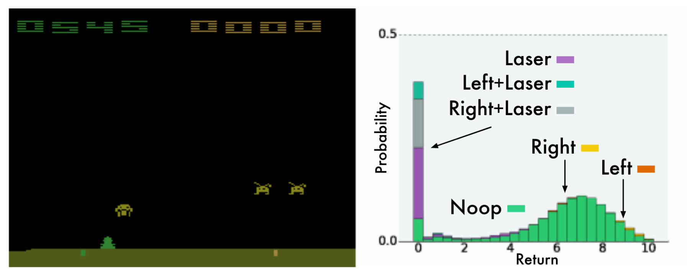
Source: A Distributional Perspective on Reinforcement Learning , Bellemare et al., 2017.
Let's look at what C51 actually learns.
This is a state of Space Invaders , with the distributions learned for each action.
Each color is one action.
Look at the big bar at zero .
It comes from the three actions that fire the laser : Laser, Left plus Laser, and Right plus Laser.
In this state, firing is a mistake: the agent fires too early, and eventually loses the game.
So these actions put a lot of probability on a return of zero.
That's the terminal value : game over.
The safe actions, Left, Right and Noop, look very different.
A nice bump between 4 and 10: the agent survives , and keeps scoring.
Left is slightly preferred, because it follows the movement of the invaders.
So the distribution tells us much more than a single number.
Here, it tells us why an action is bad: there is a real risk of losing .
Keep this figure in mind: we'll come back to it.
Distributional RL
Example of learned distribution
Source: A Distributional Perspective on Reinforcement Learning , Bellemare et al., 2017.
[play the video]
Here is the C51 agent, playing Space Invaders .
The agent is the green cannon, at the bottom.
On the right, you see the return distribution it predicts, at each frame.
Watch how it moves during the game.
Most of the time, it's a smooth bump.
When a new wave of invaders arrives, the bump shifts to the right: there are more points to collect.
From time to time, a small bar appears near zero: the agent sees a risk of losing .
And at the very end, look: a big peak near zero .
The agent "knows" the game is about to end.
Distributional RL
Example of learned distribution
Source: A Distributional Perspective on Reinforcement Learning , Bellemare et al., 2017.
[play the video]
And the same thing on Pong .
The agent is the green paddle, on the right.
Here, the distribution looks very different.
It's narrow , and centered on a small positive value.
The agent wins almost every point, so it's quite sure about the future .
But watch when the ball comes back to its paddle.
Sometimes, the distributions of the different actions split apart .
At that moment, the choice of action really matters.
C51 Architecture
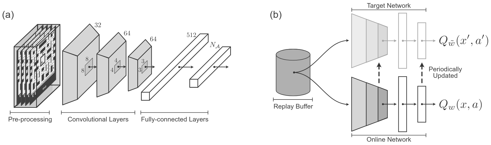
DQN
Source: Bellemare, M. G., Dabney, W., & Rowland, M. (2023). Distributional Reinforcement Learning . MIT Press.
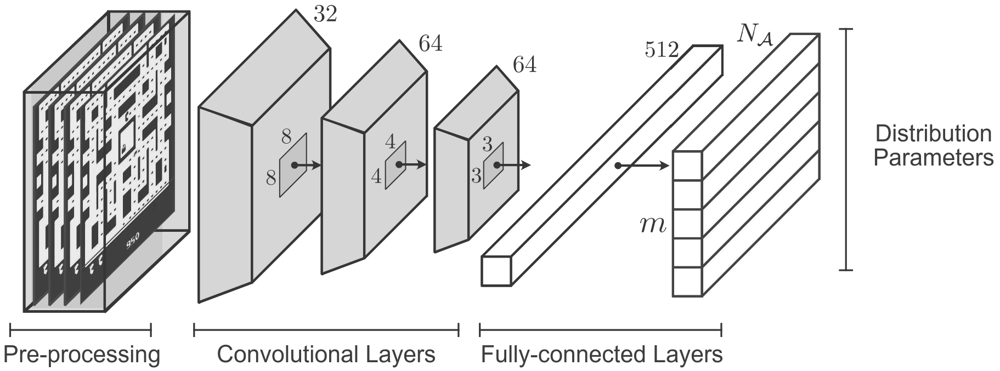
C51 / QR-DQN
Source: Bellemare, M. G., Dabney, W., & Rowland, M. (2023). Distributional Reinforcement Learning . MIT Press.
Backbone identical to DQN: convolutional layers followed by fully connected layers.
Output: $(\#\text{actions} \times N)$ logits, reshaped to $(\#\text{actions}, N)$.
Softmax over atoms for each action: $p_i(s,a)$.
Action selection: $a^* = \arg\max_a \sum_i p_i(s,a) z_i$.
Target: uses frozen (target) network and projection onto fixed support.
Now, the architecture .
Here is DQN, in more detail.
On the left, the network: a stack of the last 4 frames, 3 convolutional layers, and 2 fully connected layers.
The output has N A values: one per action .
On the right, the two networks of DQN.
The online network , trained on samples from the replay buffer .
And the target network , a copy that is updated only from time to time.
[click]
And here is C51.
As you can see, it's exactly the same network , except for the last layer.
Instead of N A outputs, we have N A times m : m numbers per action, with m equal to 51.
We reshape them into a matrix, with one row per action.
And we apply a softmax on each row , to get one distribution per action.
By the way, QR-DQN, that we'll see later, uses the same layout.
To act, we compute the mean of each distribution: the sum of z i times p i.
And we take the action with the highest mean .
As in DQN, the targets are computed with a frozen target network.
But wait...
Why model the full value distribution if action selection is based only on the expected value?
Source: A Distributional Perspective on Reinforcement Learning , Bellemare et al., 2017.
But wait... something is strange here.
In the end, C51 chooses its actions with the mean , exactly like DQN.
So why bother learning the whole distribution?
Let's go back to Space Invaders.
For a laser action, there are two possible outcomes.
Either we lose, with a return around 0.
Or we survive, with a return around 6 to 9.
DQN only learns the mean: something like 5.
But a return of 5 never happens : it's an "unrealizable" value.
The usual intuition: one sample pulls the estimate toward 0, the next one toward 8.
So the targets are blurry , and the gradients contradict each other.
C51 keeps the two modes separated : no averaging, no conflict.
So the usual answer is: a richer learning signal , since each update touches all the atoms.
And more stable learning.
But to be honest, the exact reason is still debated .
Lyle and colleagues showed in 2019 that, in the tabular and linear cases, distributional RL behaves exactly like classic RL.
So the gain seems to come from the interaction with deep networks .
DQN Algorithm
Input :Algorithm parameter :Initialize replay memory $\mathcal{D}$ to capacity $M$Initialize action-value function $\hat{Q}_{\mathbf{\omega_1}}$ with random weights $\mathbf{\omega_1}$Initialize target action-value function $\hat{Q}_{\mathbf{\omega_2}}$ with weights $\mathbf{\omega_2} = \mathbf{\omega_1}$FOR EACH episodeDO $\epsilon\text{-greedy}(\mathbf{s}, \hat{Q}_{\mathbf{\omega_1}})$ $\quad\quad\quad$ For each $j$, set $y_j =
\begin{cases}
r_j & \text{for terminal } \mathbf{s'}_j\\
r_j + \gamma \max_{\mathbf{a}^\star} \hat{Q}_{\mathbf{\omega_{2}}} (\mathbf{s'}_j)_{\mathbf{a}^\star} & \text{for non-terminal } \mathbf{s'}_j
\end{cases}$ Perform a gradient descent step on $\left( y_j - \hat{Q}_{\mathbf{\omega_1}}(\mathbf{s}_j)_{\mathbf{a}_j} \right)^2$ with respect to the weights $\mathbf{\omega_1}$ UNTIL $\mathbf{s}$ is finalRETURN $\mathbf{\omega_1}$
Before we look at the C51 algorithm, let's recall the DQN algorithm , that you already know.
I just want to point out the three places that C51 will change.
[click]
First, the action selection : ε-greedy, based on the Q-values.
Second, the target , y j: the reward, plus gamma times the max Q-value at the next state, given by the target network.
Third, the loss : a squared error between this target and the prediction.
Everything else stays the same in C51.
The replay memory , the mini-batches, and the target network , updated every tau steps.
C51 Algorithm
FOR EACH episodeDO $\epsilon\text{-greedy}(\mathbf{s}, \hat{Z}_{\mathbf{\omega_1}})$ IF $\mathcal{D}$ contains "enough" transitionsFOR EACH transition $(\mathbf{s}_j, \mathbf{a}_j, r_j, \mathbf{s'}_j)$ of this batchApply the Bellman operator Compute the projection $\Phi$ of $\mathcal{T}^{\pi}Z$ onto the support $\{z_i\}$ Perform a gradient descent step to minimize the cross-entropy $\hat{Z}_{\mathbf{\omega_2}}$ to $\hat{Z}_{\mathbf{\omega_1}}$ , i.e., set $\mathbf{\omega_2} \leftarrow \mathbf{\omega_1}$UNTIL $\mathbf{s}$ is finalRETURN $\mathbf{\omega_1}$
$$Q(s,a) = \mathbb{E}[Z(s,a)] = \sum_i z_i \, p_i(s,a).$$
The value $Q$ can be obtained as the expectation of $Z$.
Behavior policy : with probability $1-\epsilon$, take the action that maximizes the expected value
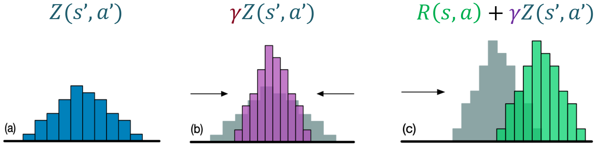
Since the support of the target distribution does not necessarily fall exactly on the fixed support of the predicted distribution,
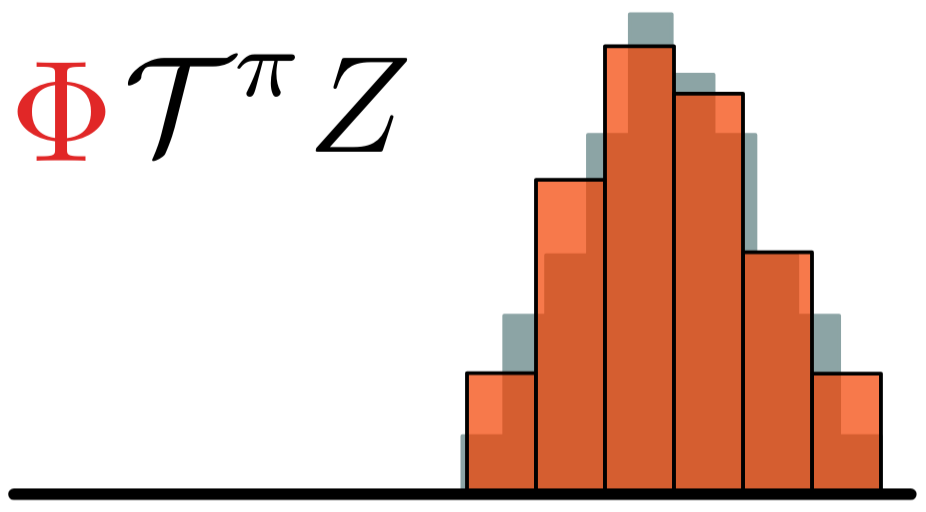
Perform a gradient descent step to minimize the cross-entropy between
Now, the C51 algorithm : the overall structure is exactly the same as DQN.
[click]
First change: the networks now output distributions , Z hat, instead of Q-values.
But we can always get a Q-value back: it's just the mean , the sum of z i times p i.
[click]
So the behavior policy doesn't change: it's still ε-greedy, based on this mean.
[click]
Then, we build the target with the distributional Bellman operator , using the target network.
We take the distribution of the next state, and we multiply it by gamma: it shrinks toward zero.
And we add the reward: the distribution is shifted .
[click]
Now, the bars don't fall on our 51 atoms anymore.
So we project them back onto the fixed grid: each bar is split between its two nearest atoms .
[click]
Finally, we minimize the cross-entropy between this target and our prediction, instead of the squared error of DQN.
C51
Atari Results (Summary)
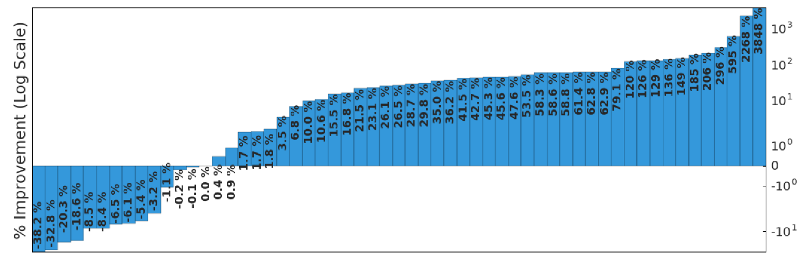
Percentage improvement, per-game (Atari benchmark), of C51 over Double DQN.A Distributional Perspective on Reinforcement Learning , Bellemare et al., 2017.
Improved median human-normalized score: 178% vs 79% for DQN
Faster learning: within 50M frames, outperforms a fully trained DQN on 45 of 57 games
More stable learning (according to the authors)
Foundation for Rainbow (integration of further improvements)
So, does it work?
Yes, and quite impressively.
This chart shows, for each Atari game, the improvement of C51 over Double DQN.
Note that it's a log scale .
On most games, the bar is positive, and on some games the gain is huge: thousands of percent.
On a few games, C51 is worse, down to about minus 40 percent.
Overall, the median human-normalized score goes from 79% for DQN, to 178% for C51.
It also learns faster .
After only 50 million frames, it beats a fully trained DQN on 45 of the 57 games.
And the authors also report more stable learning.
Finally, C51 became one of the building blocks of Rainbow .
Rainbow combines several improvements of DQN in a single agent, including the Noisy Nets we saw earlier.
C51
Atari Results (varying number of atoms)
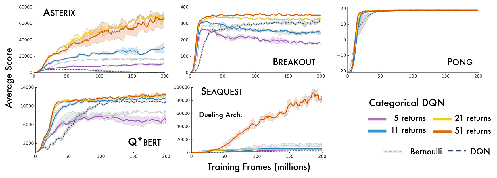
Varying number of atoms in the discrete distribution.A Distributional Perspective on
Reinforcement Learning , Bellemare et al., 2017.
Another interesting result: what happens when we change the number of atoms ?
Each plot is one game, with the score during training.
The dashed line is DQN .
The colored lines are C51, with 5, 11, 21 and 51 atoms.
In general, more atoms means better scores .
With only 5 atoms, it can even be worse than DQN: look at Breakout, or Q-bert.
With 51 atoms, it's usually the best.
Look at Seaquest : with 51 atoms, the score goes far beyond all the others.
It even beats the dueling architecture, the dotted line.
On an easy game like Pong, they all reach the maximum score anyway.
So the resolution of the distribution really matters: a too coarse histogram loses the benefit.
And that's why they chose 51 .
C51
Limitations & Extensions
Fixed support: risk of saturation if returns fall outside $[V_{\min}, V_{\max}]$Uniform resolution: inefficient for modeling sharp tails or skewed distributionsExtensions:
QR-DQN: learns the locations of quantiles (adaptive support: no $[V_{\min}, V_{\max}]$ to choose, no heuristic projection)IQN: continuous implicit quantile function for flexible modeling
Paradigm: working with distributions enables risk-sensitive and utility-based RL
Of course, C51 has some limitations .
First, the support is fixed .
You must choose V min and V max in advance.
If the true returns fall outside this range, the distribution just saturates at the bounds.
Second, the resolution is uniform : the 51 atoms are evenly spaced.
So we waste atoms where there is no mass.
And we lack precision where the distribution is sharp, or in the tails.
Plus, the projection step is a bit of a heuristic.
This motivated several extensions.
QR-DQN flips the idea.
Instead of learning probabilities on fixed locations, it learns the locations of quantiles.
So the support adapts by itself: no V min, no V max, no projection.
IQN goes one step further: it learns the whole quantile function , as a continuous function.
And more generally, once we have the distribution, we can optimize other things than the mean.
That's risk-sensitive RL.
C51
Conclusion & Discussion
Moving from expectation to distribution provides a richer learning signal.
C51 is simple, effective, and forms the basis for many improvements.
Actions are selected via the expectation: the full distribution is valuable for training and for
future risk-sensitive objectives.
Enables risk-sensitive RL, robustness, and informed exploration.
Open questions: how to choose the support? How to combine with epistemic uncertainty?
So, to sum up C51.
The core idea: move from the expectation to the full distribution of returns.
It's a simple change: just the output layer and the loss.
And it gives a richer learning signal .
C51 is simple, it works well, and many later methods build on it.
Remember the paradox: we still act on the mean .
The distribution helps during training , and it's ready for risk-sensitive objectives.
Some open questions.
How do we choose the support ?
Well, that's partly what quantile methods answer.
And how do we combine it with epistemic uncertainty ?
Remember the noisy TV.
The spread of Z measures the randomness of the environment, not what the agent doesn't know yet.
These are two different kinds of uncertainty, and good exploration needs the second one.
Quantile Regression Deep Q-Network
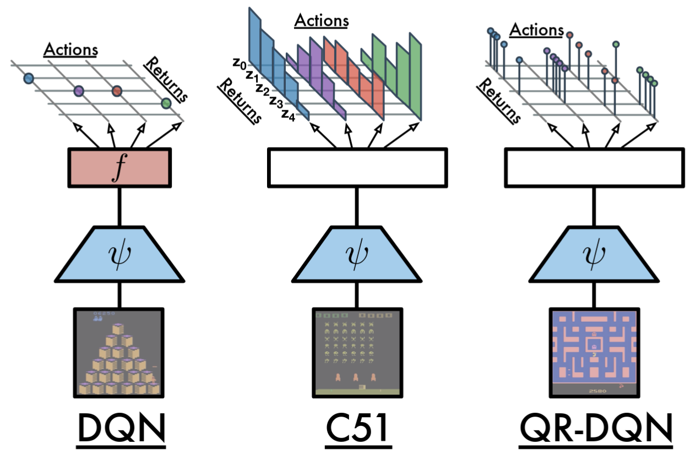
Source: Implicit Quantile Networks for Distributional Reinforcement Learning , Dabney et al., 2018.
Represents the value distribution by estimating the values of $N$ quantiles at fixed probability levels (the reverse of C51: fixed probabilities, learned locations).
Uses quantile regression loss to train the network.
Improves stability and expressiveness over categorical methods.
Distributional Reinforcement Learning with Quantile Regression , Dabney et al., 2017.
Let's look at QR-DQN a bit more closely.
This figure compares the three outputs.
DQN : one point per action.
C51 : fixed atoms on the return axis, and the network learns their heights , the probabilities.
QR-DQN : it's the reverse .
The probabilities are fixed: each output carries the same mass, one over N.
And the network learns where to put them on the return axis.
So each output is a quantile of the return distribution.
For example, with N equal to 4, the outputs are the 12.5, 37.5, 62.5 and 87.5 percent quantiles.
To learn quantiles, we use the quantile regression loss : an asymmetric absolute error.
In practice, a smoothed version: the quantile Huber loss.
Result: no bounds to choose, no projection, and better scores than C51 on Atari.
And it brings theory and practice closer.
Quantile regression is linked to the Wasserstein distance : the one where the Bellman operator is a contraction.
Extensions
QR with Utility / Risk-sensitive RL
Integrate utility functions into quantile-based RL
Customize agent behavior: risk-averse, risk-seeking,
Applications in finance, robotics, and safety-critical domains.
And this opens a whole new world: risk-sensitive RL .
Once we have the quantiles, we're not forced to maximize the mean anymore.
We can plug in a utility function , or a risk measure.
For instance, a risk-averse agent can focus on the worst cases.
Say, the average of the 10% worst returns.
That's called the CVaR : the conditional value at risk.
A risk-seeking agent does the opposite: it looks at the best cases.
IQN makes this especially easy: it can output any quantile, so we just choose which ones to look at when we act.
Where is it useful?
Everywhere a bad outcome is very costly .
In finance : we care about the risk of a big loss, not only about the average gain.
In robotics and safety-critical systems.
A robot that's great on average, but crashes once in a while... is not a great robot.
Further Reading
If you want to go deeper, here is the reference book on the topic.
Distributional Reinforcement Learning , by Bellemare, Dabney and Rowland, at MIT Press.
The authors are the people behind C51 , QR-DQN and IQN.
It covers the theory, the algorithms, and the applications.
And good news: it's freely available as a PDF.
Conclusion
Advanced RL methods address key challenges: exploration , uncertainty , and value modeling .
Intrinsic rewards (count-based, prediction-based, RND) enable progress in sparse-reward, hard-exploration environments.
Distributional RL provides richer learning signals and opens the door to risk-sensitive and robust agents.
These advances are foundational for scaling RL to real-world, high-stakes applications.
OK, let's wrap up.
Today, we looked at two limits of the standard algorithms.
First, exploration .
Random exploration, like ε-greedy or Gaussian noise, fails when rewards are sparse .
Intrinsic rewards help a lot: we reward the agent for visiting new states.
With counts, with prediction errors, or with RND.
Second, value modeling .
Instead of learning only the mean return, distributional RL learns the whole distribution .
It gives a richer learning signal.
And it opens the door to risk-sensitive and robust agents.
These ideas are not just tricks for Atari games.
They are important steps to bring RL to the real world .
Where rewards are rare, and where mistakes are expensive.
Perspectives & Open Questions
How to combine exploration, distributional modeling, and scalability in unified frameworks?
What are the best strategies for generalization and transfer to new tasks?
How to ensure safety , robustness , and interpretability in RL agents?
Other advanced topics: hierarchical RL, meta-learning, large-scale distributed RL, Multi-agent RL.
Key takeaway: Modern RL is a rapidly evolving field—mastering these advanced concepts is
crucial for both research and practical applications.
To finish, a few open questions .
First, how do we combine all of this?
Some agents, like Rainbow, already combine several of these ideas, but there's no unified framework yet.
Second, generalization : how can an agent reuse what it learned on a new task?
Third, safety , robustness and interpretability.
That's essential before we put RL agents in the real world.
And there are many topics we didn't cover today: hierarchical RL, meta-learning, distributed RL, multi-agent RL...
So, the key takeaway.
RL is moving very fast .
And the concepts we saw today are the foundations of many recent methods.
Thank you for your attention.
I'm happy to take your questions .